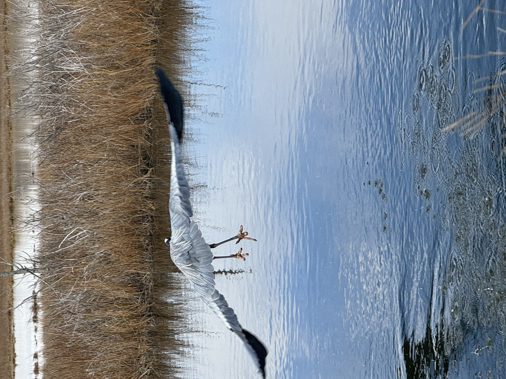

Delaware has two national wildlife refuges on its bay shore, and the useful thing to understand about both is that you watch them from your car.
This surprises people who assume wildlife viewing means walking. At Bombay Hook and Prime Hook the best birding is done on a vehicle route through impounded wetland, at low speed, with the engine off and the window down. The car is the hide. Birds that will not tolerate a person on foot at two hundred yards will carry on feeding twenty feet from a stopped vehicle.
Get that one thing right and the rest of it is straightforward.
The two refuges are not interchangeable
Bombay Hook, north of Dover on the bay side, is the one with the classic wildlife drive: a loop past freshwater impoundments and out over tidal marsh, with pull-offs and observation towers. It is the more structured experience, and the easier introduction.
Prime Hook, further south toward Milton and Lewes, has been through a major restoration — a landscape that was managed as freshwater impoundment for decades and has been substantially reconnected to the tide. It reads differently: more marsh, more water, fewer neat compartments.
Both are federal refuges managed by the U.S. Fish and Wildlife Service, and both operate on their own hours, access rules and occasional closures. Check the refuge's own current information before you drive down — sections close for management, weather and construction, and a refuge road is not a public highway.
When to go
Early or late. The first two hours after sunrise and the last two before sunset are when birds feed and move. The middle of a hot afternoon is the worst time to arrive and the time most people do.
Watch the tide, not just the clock. This is the piece casual visitors miss. On the tidal marsh, a falling tide concentrates fish and invertebrates into shrinking water and pulls herons, egrets and shorebirds in to feed on them. A high tide spreads everything out. If you can only go once, go on a falling tide.
Season changes the cast completely. Spring and autumn migration bring shorebirds through in numbers. Winter is the waterfowl season — large concentrations of geese and ducks. Summer is quieter for variety but reliable for the resident wading birds. There is no dead month; there are different months.
What to bring, honestly
Binoculars matter more than anything else, and modest ones are fine. A long camera lens is a luxury; binoculars are the difference between seeing a bird and identifying one.
Bring more water than you expect and insect repellent between roughly May and September. Delaware's salt marsh produces mosquitoes and greenhead flies in quantities that are genuinely notable, and greenheads in particular are indifferent to stoicism.
Leave the drone at home. Refuges restrict aircraft, and a drone over a marsh flushes exactly the birds everybody else drove out to see.
How to actually look
Scan slowly, then stop.
The common failure is sweeping the marsh with binoculars at speed, seeing motion, and moving on. Wading birds are mostly motionless. A great blue heron standing in a creek reads as a grey post until it moves, and if you are panning quickly you will not be looking at it when it does.
Pick a section of water and give it two full minutes before moving the glasses. You will find birds you drove past.
Learn a small number of shapes rather than a long list of species. Tall and grey, neck folded: great blue heron. Bright white and slimmer: egret. Small, hunched, half-hidden in vegetation at the edge: probably a green heron, and worth the effort. Everything else can wait until you care enough to buy a field guide.
And listen. On a still morning the marsh is not quiet, and a lot of what is out there announces itself before you see it.
What you are actually looking at
Worth holding in mind while sitting in a stopped car on a refuge road: the impoundments and marsh you are watching are not scenery. They are one of the reasons the Delaware Bay shore matters on a continental scale — a working link in the migratory chain, and the same wetland system that filters water and absorbs storm surge for everybody living behind it.
The birds are the visible part of an argument about land that is still going on. You are watching the case for it.
Sources: U.S. Fish and Wildlife Service information for Bombay Hook and Prime Hook National Wildlife Refuges, including the wildlife drive at Bombay Hook and the marsh restoration at Prime Hook; Audubon guidance on wading bird behaviour and observation; Delaware DNREC material on Delaware heron species. Refuge hours, access, road conditions and seasonal closures change and are set by the refuges themselves; specific opening times and fees are deliberately not quoted here, and the refuges' own current information is the authority. Tide and seasonal guidance reflects general wading-bird and shorebird behaviour rather than a site-specific study.